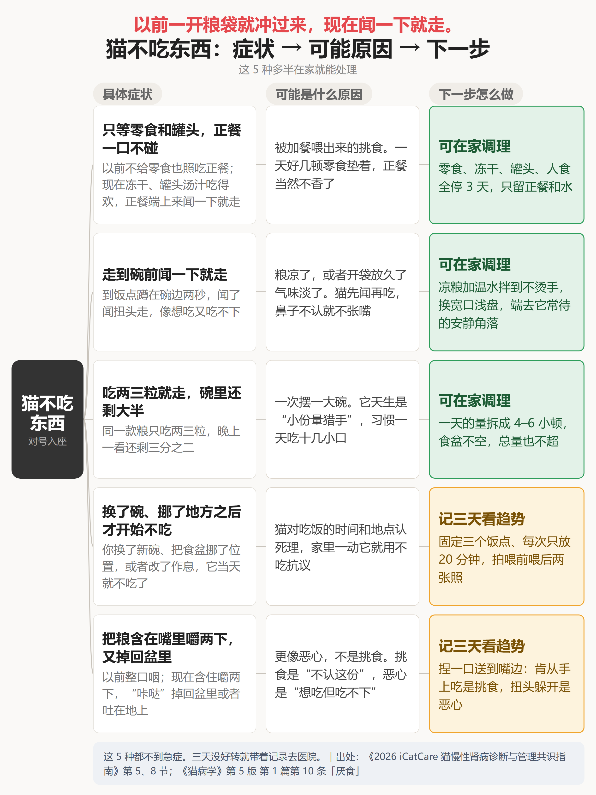
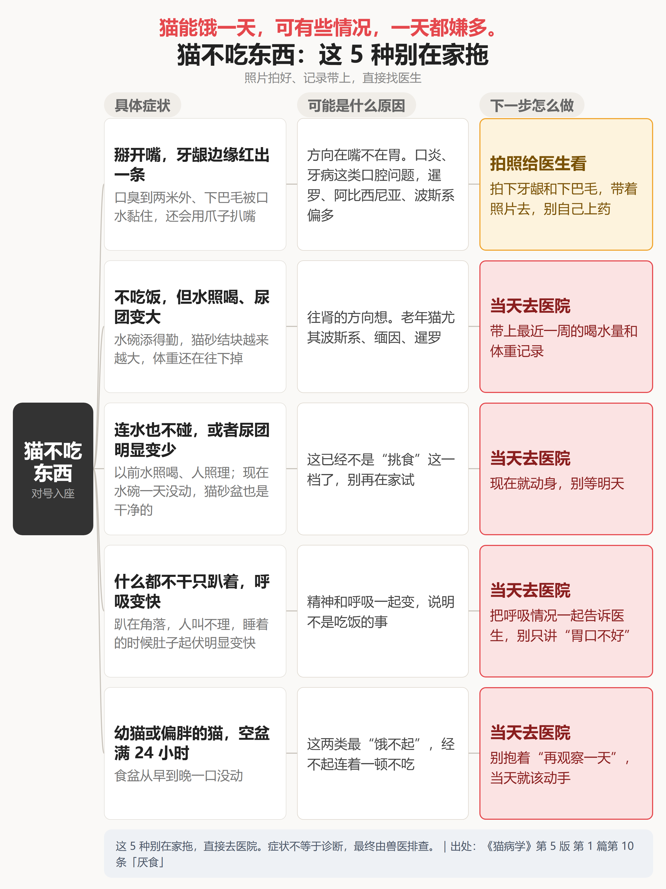
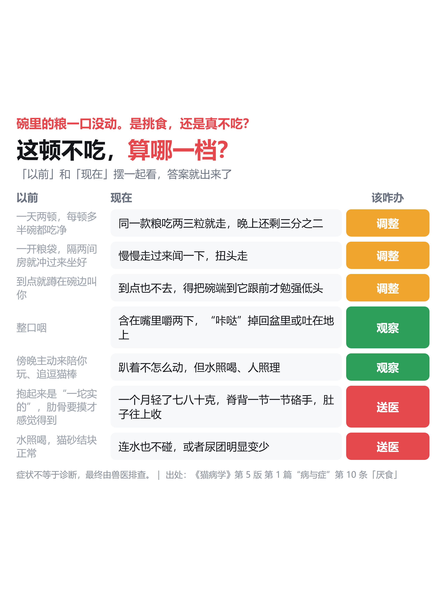
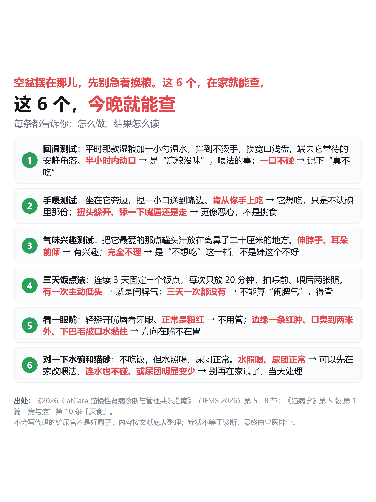
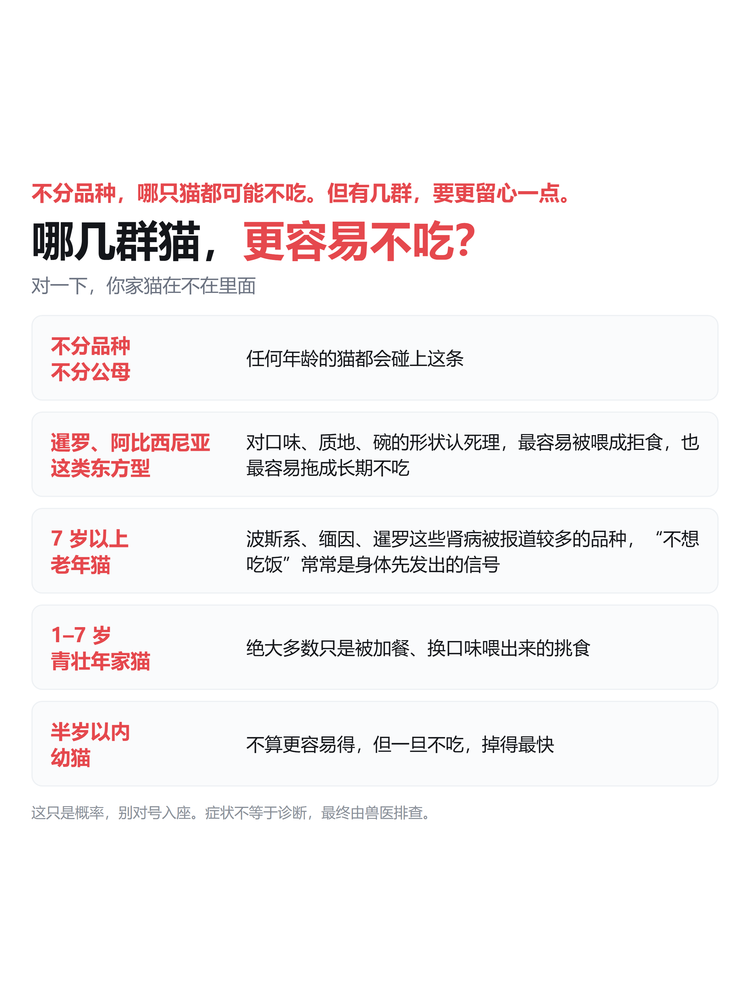
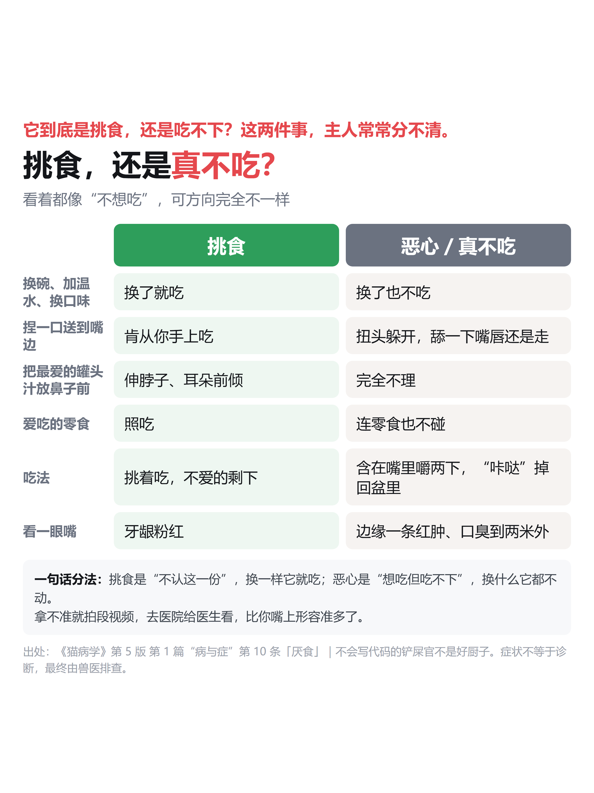
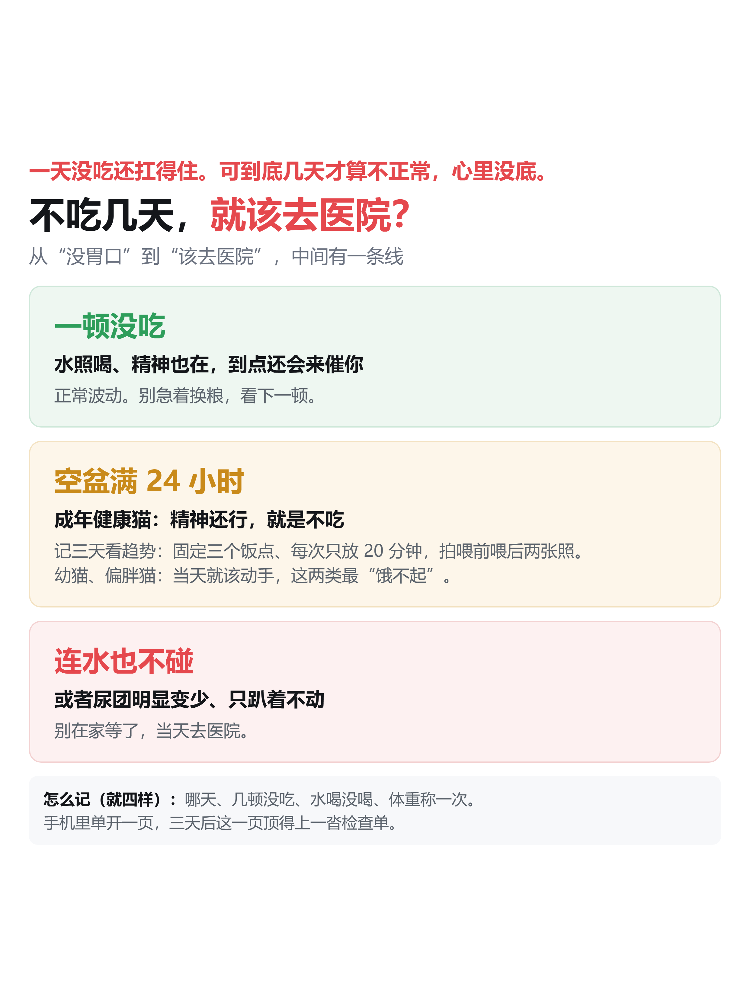
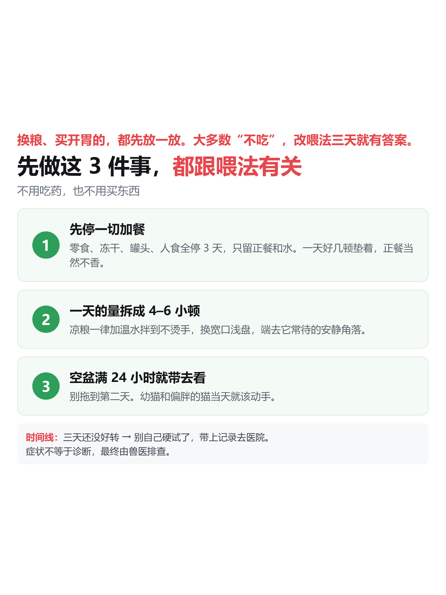
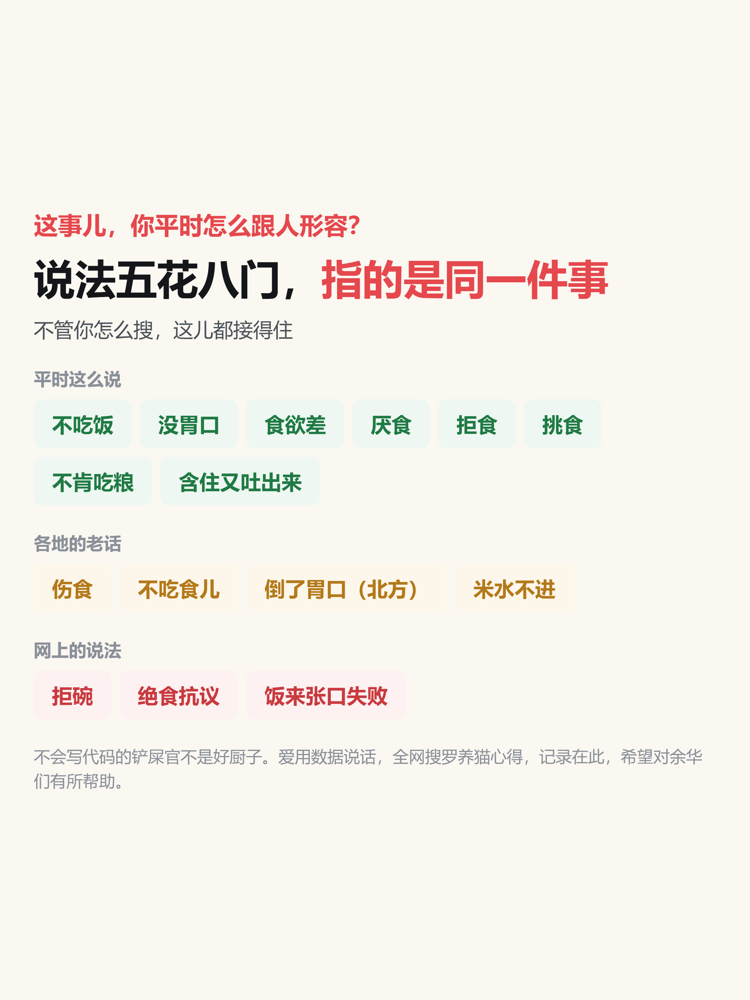
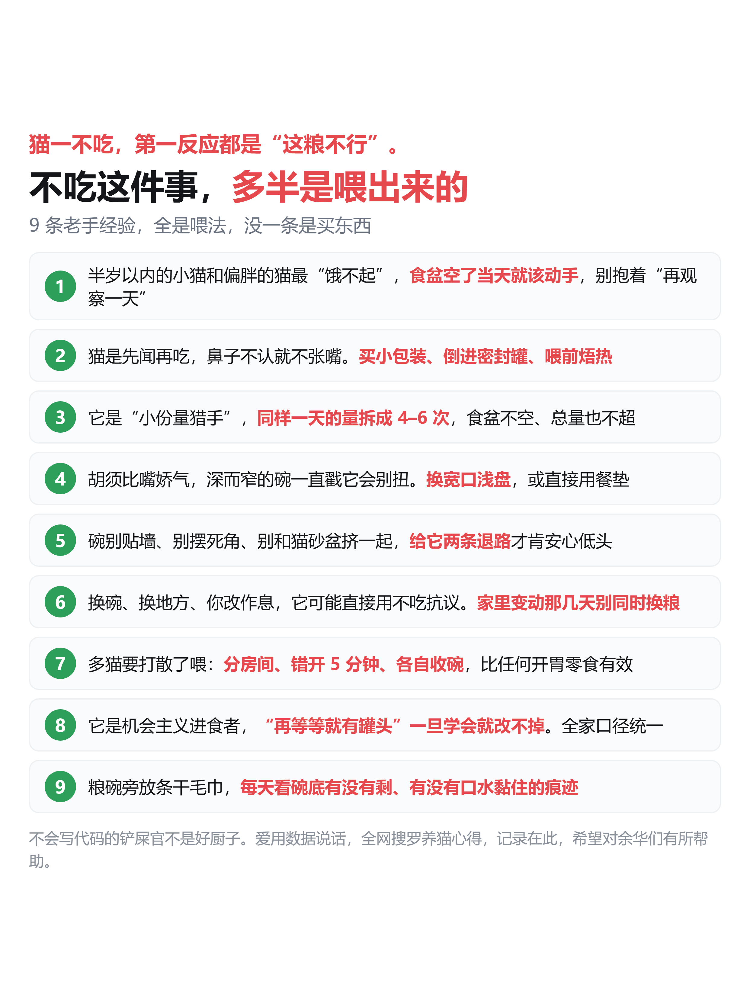

第一期 = 判断（4 图）｜第二期 = 怎么办（6 图）
图可左右滑动；下面是该期的发布文案




今天这碗粮，它又没动。换粮的念头，估计又冒出来了。
先别换。猫不吃东西，多数是喂法闹的；但真有那么几种，压根不是胃口的事。
第一张收 5 种在家就能处理的，第二张收 5 种别在家拖的，两张拼起来才是完整一张表。
第三张对着"以前 → 现在"看一遍，判断该调整、观察还是送医。
最后一张是 6 个在家就能做的自测，今晚就能查。






上一期讲了怎么判断，这一期讲怎么办。
第一张说哪几群猫更容易不吃。不分品种，但有几群要更留心。
第二张给一套对照表：挑食和真不吃怎么分，六行看完就清楚。
第三张划一条线：不吃几天该去医院。
第四张是这一步最该做的：先把加餐全停，改喂法三天。
第五张收各种叫法，不管你怎么搜都接得住。
第六张是 9 条老手经验，全是喂法，没一条是买东西。
一期/ 二期/，每张 PNG 旁边有同名 HTML 源，改完用 chrome headless 重截（--window-size=1242,1656）。